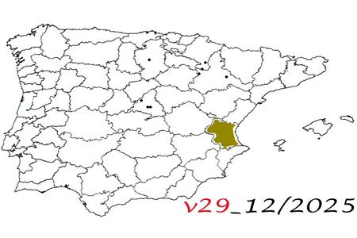

29. Trip through the province of Valencia
29. Trip through the province of Valencia
December 30 to January 4, 2026
En este viaje recorrí
© 2016 - All Rights Reserved - Diseñada por Sergio López Martínez
![[Valid RSS]](https://www.onepointsync.com/wp-content/uploads/2016/08/valid-rss-rogers.png "Validate my RSS feed")